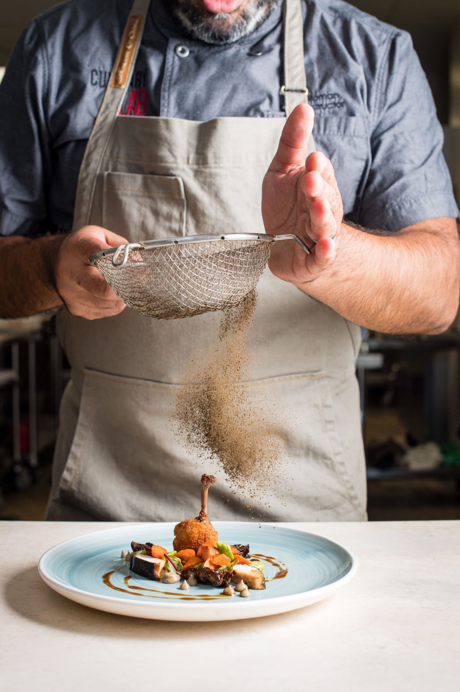
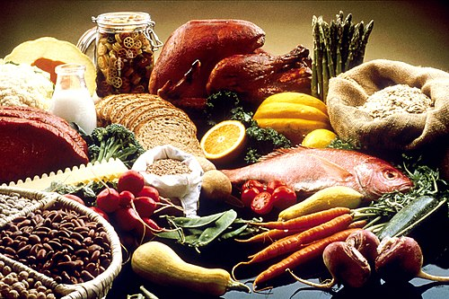
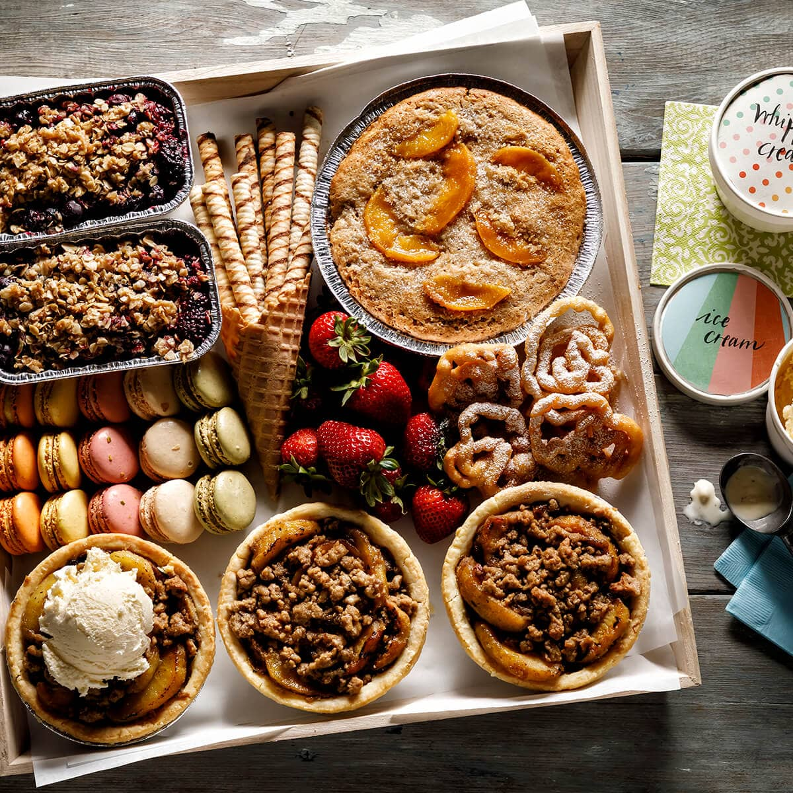
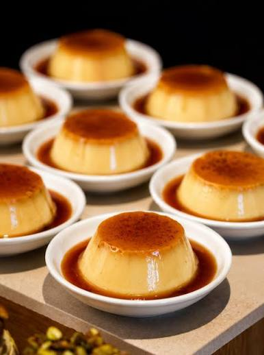

Are you struggling to decide what to make for your next meal? Are you searching for the perfect recipe for a specific dish but don’t know where to start? CookCorner is here to make your cooking journey easier and more enjoyable. Whether you are looking for quick and simple meals, creative new ideas, or a recipe for a favourite dish, our website helps you discover a wide range of recipes that suit your needs. From everyday meals to special treats, CookCorner provides inspiration and guidance to help you create delicious food with confidence. Explore different flavours, discover new dishes, and find the recipes that turn your ingredients into something amazing. No matter your cooking experience, CookCorner is your place to find ideas, learn new skills, and bring your love for food to life.
Desserts are the perfect way to end any meal or celebrate a special occasion. Whether you're craving rich chocolate cakes, creamy cheesecakes, flaky pastries, refreshing fruit desserts, or classic homemade cookies, there's something to satisfy every sweet tooth. At CookCorner, you'll discover a wide variety of dessert recipes that are easy to follow and suitable for all skill levels. This website also provides a collection of dessert recipes, helping you discover new sweet treats and find the perfect recipe for any occasion. From quick no-bake treats to impressive baked creations, our collection is designed to inspire you to create delicious desserts with confidence. Explore new flavours, master timeless favourites, and turn simple ingredients into irresistible sweet creations that everyone will love.


.jpg)